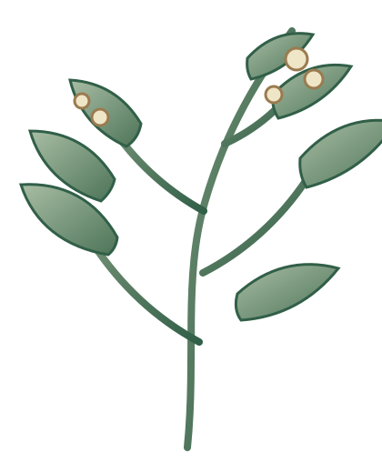

Volume I
Flora Observata
Un volume costruito soltanto con osservazioni reali salvate sul tuo dispositivo.
0 osservazioni
Volume I
Un volume costruito soltanto con osservazioni reali salvate sul tuo dispositivo.
0 osservazioni
Schede botaniche
Quando una specie dispone di dati realmente validati, HERBARIUM la trasforma in una pagina botanica completa. I campi mancanti restano vuoti.
In attesa
Le osservazioni senza una determinazione sicura restano qui: conservate, visibili e mai trasformate in specie inventate.